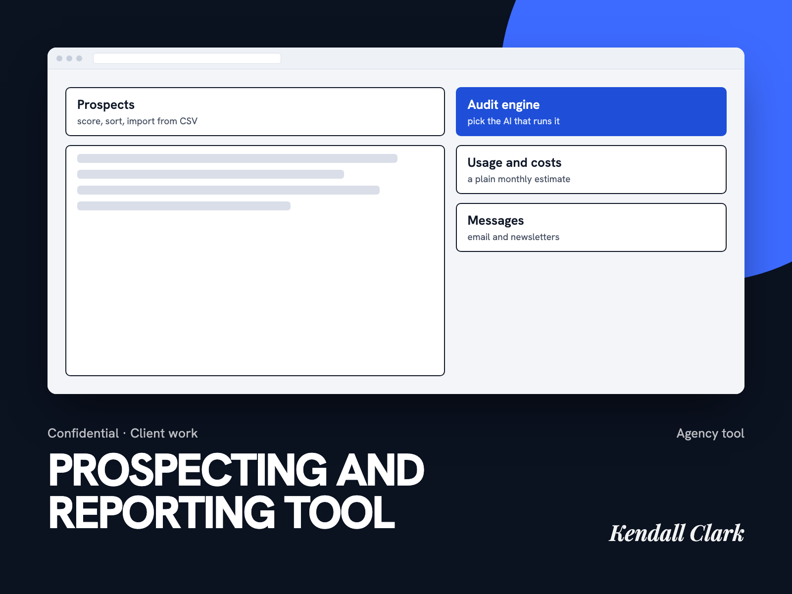

A prospecting and reporting tool for an SEO agency.
One place to find prospects, audit how visible they are in search and AI answers, and send the follow-up, built for an owner who is not technical and watches costs closely.

The problem
A small SEO and marketing agency that serves moving and portable storage companies was working between exports, spreadsheets, and separate email tools to prospect and report. The owner wanted prospects scored on search and AI-answer visibility, imported from existing databases, and contacted from the same place, without surprise bills.
What I built
- Prospects. A sortable table with scores, notes, and a LinkedIn lookup helper. CSV import accepts exports from other CRMs.
- Audit engine. Audits run on a model the user picks, with several providers behind one picker, from free options to paid ones.
- Messages. Email and newsletters with saved templates, HTML import, and AI fill-in for the blanks.
- Usage and costs. A page that shows spend and includes a calculator for a future month.
- Help. A walkthrough page and short in-app explanations on every section.
Decisions that mattered
- Cost first. The biggest worry was an open-ended bill, so predictable cost became a feature, not a footnote.
- Engine choice belongs to the user. Quality and price trade off differently for each audit, so the picker lets the owner decide per run.
- Plain language. The owner is not technical, so every section says what it does and what it will cost to use.
- No overpromising on email. Deliverability was an open question. I said I did not know and proposed testing before promising inbox placement.
What I learned
A free-tier database that paused after inactivity caused repeated login outages. For anything a client depends on, the hosting tier is a product decision, not a detail to fix later.
Outcome
The tool is in pilot with the client and private. I have no usage or revenue figures to share, so I am not claiming any.
Tools, stack, and skills
- Stack
- Next.js, Supabase, Vercel
- Models
- User-selectable engines: Claude Haiku, ChatGPT, Grok, DeepSeek, Gemini, Groq
- Tools
- Mailchimp, Semrush and Ahrefs data, ScraperAPI, Resend
- Skills
- SaaS UX, CSV import, AI audits, email and newsletter design, cost visibility